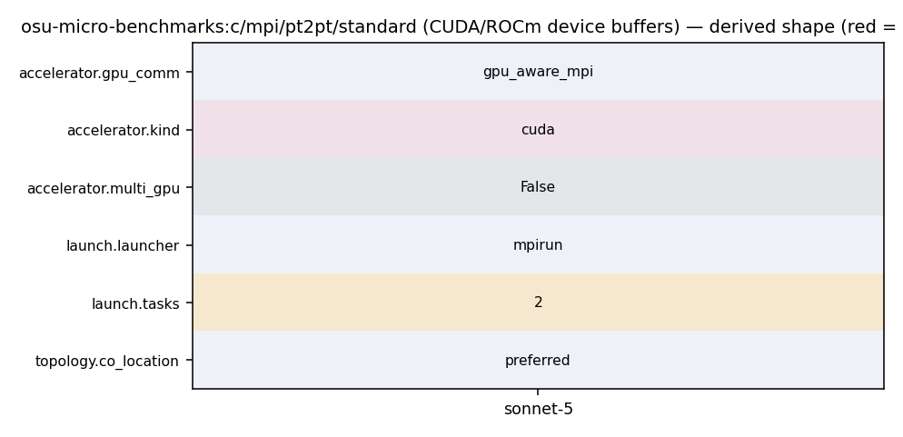

mpirun_rsh -np 2 -hostfile hostfile MV2_USE_CUDA=1 osu_latency D D
194 touch_managed_src_no_window(s_buf, size, ADD); 195 } 196 #endif /* #ifdef _ENABLE_CUDA_KERNEL_ */ 197 MPI_CHECK(MPI_Send(s_buf, num_elements, 198 omb_curr_datatype, 1, 1, omb_comm)); 199 MPI_CHECK(MPI_Recv(r_buf, num_elements, 200 omb_curr_datatype, 1, 1, omb_comm, 201 &reqstat)); 202 #ifdef _ENABLE_CUDA_KERNEL_ 203 if (options.src == 'M') { 204 touch_managed_src_no_window(r_buf, size, SUB);
341 [AC_MSG_ERROR([cannot link with -lcuda])]) 342 AC_SEARCH_LIBS([cudaFree], [cudart], [], 343 [AC_MSG_ERROR([cannot link with -lcudart])]) 344 AC_CHECK_HEADERS([cuda.h], [], 345 [AC_MSG_ERROR([cannot include cuda.h])]) 346 AC_DEFINE([_ENABLE_CUDA_], [1], [Enable CUDA]) 347 ]) 348 349 AS_IF([test "x$build_cuda_kernels" = xyes], [
313 AC_DEFINE([__HIP_PLATFORM_AMD__]) 314 AC_CHECK_HEADERS([hip/hip_runtime_api.h], [], 315 [AC_MSG_ERROR([cannot include hip/hip_runtime_api.h])]) 316 AC_SEARCH_LIBS([hipFree], [amdhip64], [], 317 [AC_MSG_ERROR([cannot link with -lamdhip64])]) 318 AC_DEFINE([_ENABLE_ROCM_], [1], [Enable ROCm]) 319 ]) 320 321 AS_IF([test "x$enable_sycl" = xyes], [
162 options.skip = options.skip_large; 163 } 164 165 #ifdef _ENABLE_CUDA_KERNEL_ 166 if ((options.src == 'M' && options.MMsrc == 'D') || 167 (options.dst == 'M' && options.MMdst == 'D')) { 168 t_lo = measure_kernel_lo_no_window(s_buf, size); 169 } 170 #endif /* #ifdef _ENABLE_CUDA_KERNEL_ */ 171 172 omb_graph_allocate_and_get_data_buffer( 173 &omb_graph_data, &omb_graph_options, size, options.iterations); 174 MPI_CHECK(MPI_Barrier(omb_comm)); 175 t_total = 0.0; 176 177 for (i = 0; i < options.iterations + options.skip; i++) { 178 if (i == options.skip) { 179 omb_papi_start(&papi_eventset); 180 } 181 if (options.validate) { 182 set_buffer_validation(s_buf, r_buf, size, options.accel, i, 183 omb_curr_datatype, omb_buffer_sizes); 184 MPI_CHECK(MPI_Barrier(omb_comm)); 185 } 186 if (myid == 0) { 187 for (j = 0; j <= options.warmup_validation; j++) { 188 if (i >= options.skip && 189 j == options.warmup_validation) { 190 t_start = MPI_Wtime(); 191 } 192 #ifdef _ENABLE_CUDA_KERNEL_ 193 if (options.src == 'M') { 194 touch_managed_src_no_window(s_buf, size, ADD); 195 } 196 #endif /* #ifdef _ENABLE_CUDA_KERNEL_ */ 197 MPI_CHECK(MPI_Send(s_buf, num_elements, 198 omb_curr_datatype, 1, 1, omb_comm)); 199 MPI_CHECK(MPI_Recv(r_buf, num_elements, 200 omb_curr_datatype, 1, 1, omb_comm, 201 &reqstat)); 202 #ifdef _ENABLE_CUDA_KERNEL_
1007 osu_iscatter - MPI_Iscatter Latency Test 1008 osu_iscatterv - MPI_Iscatterv Latency Test 1009 1010 If both CUDA and OpenACC support is enabled you can switch between the modes 1011 using the -d [cuda|openacc] option to the benchmarks. If ROCm support is 1012 enabled, you need to use -d rocm option to make the benchmarks use this feature. 1013 If SYCL support is enabled, you need to use -d sycl option to make the 1014 benchmarks use this feature. Whether a process allocates its communication 1015 buffers on the GPU device or on the host can be controlled at run-time. 1016 Use the -h option for more help. 1017 1018 ./osu_latency -h 1019 Usage: osu_latency [options] [RANK0 RANK1] 1020 1021 RANK0 and RANK1 may be `D' or `H' which specifies whether 1022 the buffer is allocated on the accelerator device or host 1023 memory for each mpi rank 1024 1025 options: 1026 -d TYPE accelerator device buffers can be of TYPE `cuda' or `openacc' 1027 -h print this help message 1028 1029 Each of the pt2pt benchmarks takes two input parameters. The first parameter 1030 indicates the location of the buffers at rank 0 and the second parameter 1031 indicates the location of the buffers at rank 1. The value of each of these 1032 parameters can be either 'H' or 'D' to indicate if the buffers are to be on the 1033 host or on the device respectively. When no parameters are specified, the 1034 buffers are allocated on the host. The collective benchmarks will use buffers 1035 allocated on the device if the -d option is used otherwise the buffers will be 1036 allocated on the host. 1037 1038 Examples: 1039 1040 - mpirun_rsh -np 2 -hostfile hostfile MV2_USE_CUDA=1 osu_latency D D 1041 - mpirun_rsh -np 2 -hostfile hostfile MV2_USE_ROCM=1 osu_latency D D 1042 1043 In this run, the latency test allocates buffers at both rank 0 and rank 1 on 1044 the GPU devices.
1037 1038 Examples: 1039 1040 - mpirun_rsh -np 2 -hostfile hostfile MV2_USE_CUDA=1 osu_latency D D 1041 - mpirun_rsh -np 2 -hostfile hostfile MV2_USE_ROCM=1 osu_latency D D 1042 1043 In this run, the latency test allocates buffers at both rank 0 and rank 1 on 1044 the GPU devices.
103 break; 104 } 105 106 if (numprocs != 2) { 107 if (myid == 0) { 108 fprintf(stderr, "This test requires exactly two processes\n"); 109 } 110 111 omb_mpi_finalize(omb_init_h); 112 exit(EXIT_FAILURE); 113 } 114 115 if (options.buf_num == SINGLE) { 116 if (allocate_memory_pt2pt(&s_buf, &r_buf, myid)) {
194 touch_managed_src_no_window(s_buf, size, ADD); 195 } 196 #endif /* #ifdef _ENABLE_CUDA_KERNEL_ */ 197 MPI_CHECK(MPI_Send(s_buf, num_elements, 198 omb_curr_datatype, 1, 1, omb_comm)); 199 MPI_CHECK(MPI_Recv(r_buf, num_elements, 200 omb_curr_datatype, 1, 1, omb_comm, 201 &reqstat)); 202 #ifdef _ENABLE_CUDA_KERNEL_ 203 if (options.src == 'M') { 204 touch_managed_src_no_window(r_buf, size, SUB);
1040 - mpirun_rsh -np 2 -hostfile hostfile MV2_USE_CUDA=1 osu_latency D D 1041 - mpirun_rsh -np 2 -hostfile hostfile MV2_USE_ROCM=1 osu_latency D D 1042 1043 In this run, the latency test allocates buffers at both rank 0 and rank 1 on 1044 the GPU devices. 1045 1046 - mpirun_rsh -np 2 -hostfile hostfile MV2_USE_CUDA=1 osu_bw D H 1047 - mpirun_rsh -np 2 -hostfile hostfile MV2_USE_ROCM=1 osu_bw D H